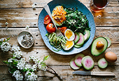
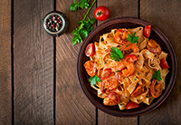
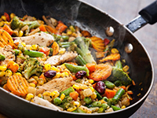
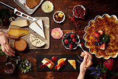

Lounaslista
- Maanantai
Juusto-vihanneskeittoa ja kokin sämpylä
Paistettua lohta, sinappikastiketta, tilliperunoita ja kasviksia
Marjakiisseliä ja hunajakermavaahtoa
- Tiistai
Kana-fetajustosalaattia ja kokin sämpylä
Paistettua punakampelaa, pinaattikastiketta ja perunamuusia
Pannukakkua, mansikkahilloa ja kermavaahtoa
- Keskiviikko
Tomaatti-yrttikeittoa ja kokin sämpylä
Kalkkunaleikettä, BBQ-kastiketta, riisiä ja kasviksia
Omenapiirakkaa ja vaniljakastiketta
- Torstai
Rapukeittoa ja kokin sämpylä
Poronkäristystä, perunamuusia, puolukkahilloa ja suolakurkkuja
Hedelmäsalaattia ja kinuskikastiketta
- Perjantai
Savulohisalaatti ja kokin sämpylä
Naudan paahtopaistia, punaviinikastiketta, kermaperunat ja kasviksia
Suklaamousse
11 euroa, sisältää ruokajuoman - vesi, kotikalja, maito



